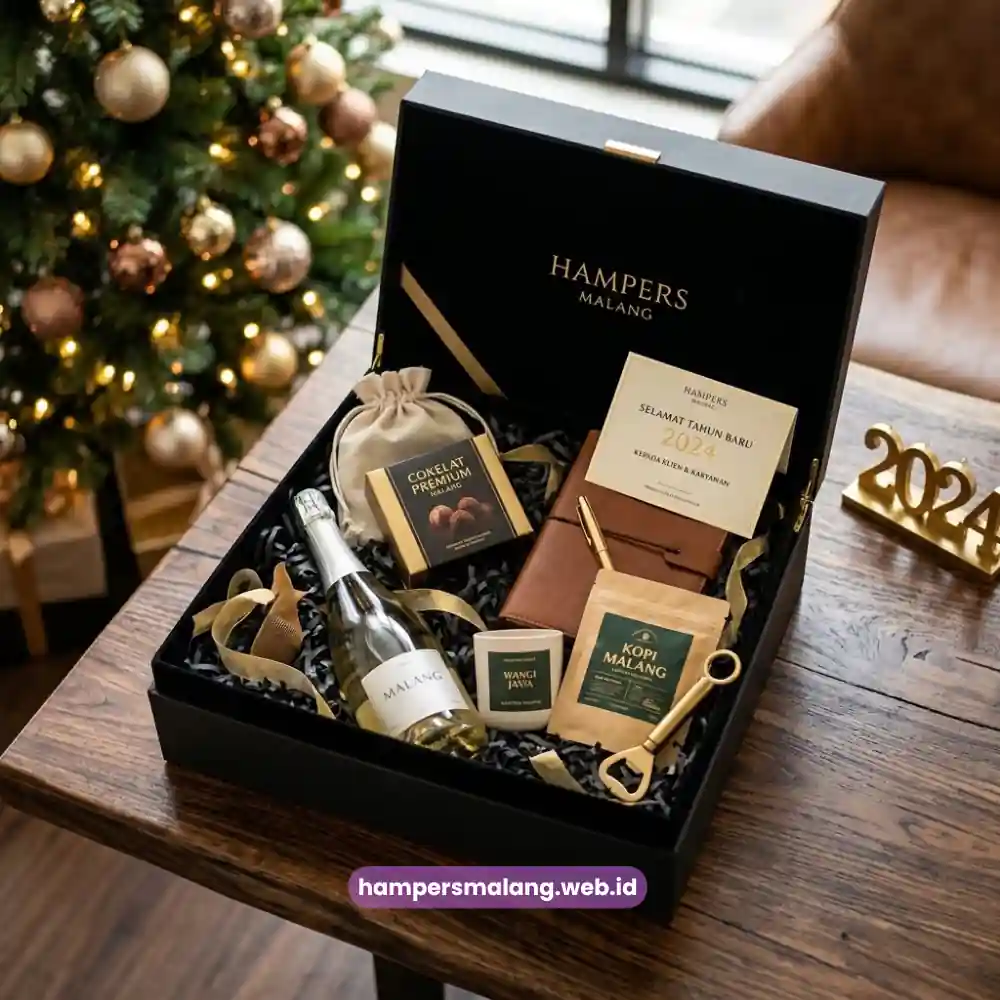

Hampers tahun baru perusahaan adalah paket hadiah korporat yang dikirimkan menjelang pergantian tahun sebagai bentuk apresiasi kepada klien, mitra bisnis, atau karyawan.
Hampers ini umumnya berisi kombinasi makanan premium, minuman, dan suvenir bernuansa elegan yang mencerminkan citra perusahaan.
Semakin dekat momen pergantian tahun, permintaan hampers dengan konsep eksklusif dan personalisasi tinggi semakin meningkat di kalangan pelaku bisnis.
Momentum tahun baru bukan sekadar seremoni kalender.
Bagi banyak perusahaan, ini adalah kesempatan strategis untuk memperkuat hubungan dengan pihak-pihak yang berperan penting sepanjang tahun berjalan.
Sebuah hampers yang dikemas dengan baik dapat menyampaikan pesan yang sulit diungkapkan lewat kartu ucapan biasa, bahwa perusahaan Anda menghargai kerja sama, loyalitas, dan kepercayaan yang telah dibangun.
- Hampers tahun baru perusahaan berfungsi sebagai media apresiasi sekaligus alat branding korporat.
- Waktu pemesanan ideal adalah dua hingga empat minggu sebelum pergantian tahun.
- Isi hampers dapat disesuaikan dengan penerima: klien, mitra bisnis, atau karyawan internal.
- Harga bervariasi tergantung jumlah item, kualitas kemasan, dan tingkat personalisasi.
- Personalisasi logo dan warna brand menjadi nilai jual utama hampers korporat masa kini.
Mengapa Hampers Tahun Baru Penting bagi Perusahaan?
Hampers tahun baru penting karena menjadi representasi nyata dari nilai dan citra perusahaan di mata eksternal maupun internal.
Dalam dunia bisnis, hubungan jangka panjang sering kali dibangun dari hal-hal kecil yang konsisten, dan pemberian hampers di penghujung tahun adalah salah satu cara paling efektif untuk menunjukkan bahwa perusahaan Anda memperhatikan detail.
Bagi klien dan mitra bisnis, menerima hampers berkualitas menimbulkan kesan bahwa kerja sama yang terjalin dihargai secara personal, bukan sekadar transaksional.
Bagi karyawan, hampers menjadi bentuk pengakuan atas kontribusi mereka sepanjang tahun, yang pada akhirnya dapat meningkatkan rasa memiliki terhadap perusahaan.
Dari sisi pemasaran, hampers bermerek juga berfungsi sebagai media promosi halus yang memperkuat brand recall setiap kali penerima menggunakan atau melihat kembali isi hampers tersebut.
Beberapa hasil riset industri hadiah korporat di Asia Tenggara menunjukkan bahwa perusahaan yang rutin memberikan hampers akhir tahun cenderung memiliki tingkat retensi klien yang lebih stabil dibandingkan yang tidak melakukannya, terutama pada sektor jasa dan B2B, meskipun besarannya dapat bervariasi tergantung industri dan skala perusahaan.
Baca Juga: Makna Warna dan Desain Hampers Imlek untuk Citra Perusahaan Anda
Kapan Waktu Terbaik Memesan Hampers Tahun Baru Perusahaan?
Waktu terbaik memesan hampers tahun baru perusahaan adalah dua hingga empat minggu sebelum tanggal 31 Desember, agar proses kustomisasi, produksi, dan pengiriman berjalan tanpa terburu-buru.
Periode akhir tahun merupakan puncak permintaan di industri hampers, sehingga pemesanan mendadak berisiko menghadapi keterbatasan stok maupun antrean produksi yang panjang.
Perusahaan dengan jumlah penerima hampers yang besar, misalnya lebih dari lima puluh unit, sebaiknya melakukan pemesanan lebih awal lagi, idealnya sejak awal Desember.
Hal ini memberi ruang untuk proses approval internal, revisi desain kemasan, hingga koordinasi jadwal pengiriman ke berbagai alamat, baik dalam satu kota maupun lintas kota.
Selain faktor waktu produksi, pemesanan lebih awal juga memberi keuntungan dari sisi anggaran.
Banyak penyedia hampers menawarkan skema harga yang lebih fleksibel bagi pemesan awal dibandingkan pemesan mendadak di minggu terakhir Desember.
Apa Saja Ide Hampers Tahun Baru Perusahaan yang Paling Dicari?
Ide hampers tahun baru perusahaan yang paling dicari saat ini mengarah pada konsep yang memadukan unsur premium, fungsional, dan personal, bukan sekadar kumpulan makanan ringan dalam satu keranjang.
Tren ini didorong oleh pergeseran ekspektasi penerima korporat yang menginginkan hadiah dengan kesan eksklusif namun tetap relevan dengan kebutuhan sehari-hari.
Hampers Bertema Makanan dan Minuman Premium
Kombinasi cokelat premium, kopi atau teh pilihan, serta camilan sehat menjadi pilihan yang konsisten diminati karena bersifat universal dan mudah dinikmati oleh berbagai kalangan penerima.
Konsep ini cocok untuk hampers klien maupun karyawan karena tidak memerlukan preferensi khusus.
Hampers dengan Sentuhan Custom Branding
Hampers yang menyertakan elemen visual perusahaan, seperti logo pada kemasan, kartu ucapan bermerek, atau warna kemasan yang selaras dengan identitas brand, kini menjadi standar baru di kalangan korporat.
Elemen ini memperkuat kesan profesional sekaligus menjadikan hampers sebagai media branding yang halus namun efektif.

Hampers Fungsional untuk Kebutuhan Kerja
Beberapa perusahaan memilih memasukkan item fungsional seperti notebook, alat tulis premium, atau organizer kecil ke dalam hampers, terutama untuk penerima internal.
Pendekatan ini memberi nilai tambah karena barang tersebut dapat digunakan dalam aktivitas kerja sehari-hari, bukan hanya dikonsumsi lalu habis.
Hampers Ramah Lingkungan
Tren kemasan berbahan ramah lingkungan turut mengalami peningkatan permintaan, sejalan dengan semakin banyak perusahaan yang ingin menunjukkan komitmen terhadap keberlanjutan melalui setiap aspek operasional, termasuk pemilihan hadiah korporat.
Hampers Malang menghadirkan variasi konsep-konsep tersebut dalam katalog yang dapat disesuaikan dengan kebutuhan dan anggaran perusahaan Anda, sehingga Anda tidak perlu menyusun sendiri kombinasi isi hampers dari nol.
Berapa Kisaran Harga Hampers Tahun Baru Perusahaan?
Harga hampers tahun baru perusahaan umumnya bervariasi tergantung pada jumlah item, kualitas bahan, jenis kemasan, serta tingkat personalisasi yang diminta.
Semakin banyak elemen custom branding yang disertakan, umumnya semakin tinggi pula biaya produksinya karena memerlukan proses desain dan pencetakan tambahan.
Secara umum, perusahaan dapat memilih kategori mulai dari hampers dengan isi sederhana namun tetap elegan, hingga hampers premium dengan kemasan eksklusif dan isi yang lebih lengkap.
Penentuan kategori ini sebaiknya disesuaikan dengan tujuan pemberian, apakah untuk klien besar yang memerlukan kesan istimewa, atau untuk karyawan dalam jumlah banyak yang memerlukan efisiensi anggaran per unit.
Pembahasan lebih rinci mengenai kisaran anggaran per kategori dapat Anda simak pada artikel kami tentang budget hampers tahun baru perusahaan, yang menguraikan estimasi biaya berdasarkan segmen penerima.
Bagaimana Cara Memilih Hampers yang Merepresentasikan Identitas Perusahaan?
Memilih hampers yang tepat perlu mempertimbangkan tiga faktor utama: profil penerima, pesan yang ingin disampaikan, dan konsistensi dengan identitas visual perusahaan.
Hampers untuk klien korporat besar umumnya memerlukan sentuhan yang lebih formal dan eksklusif dibandingkan hampers untuk internal tim.
Konsistensi warna kemasan, logo, dan gaya kartu ucapan dengan identitas brand perusahaan turut memengaruhi bagaimana penerima mengasosiasikan hampers tersebut dengan citra perusahaan Anda.
Detail sekecil apa pun, mulai dari pemilihan pita hingga jenis kertas kartu ucapan, dapat memengaruhi kesan keseluruhan yang diterima.
Pembahasan mendalam mengenai opsi personalisasi kemasan dan branding dapat Anda temukan pada artikel kami tentang custom branding hampers tahun baru, yang mengulas berbagai pilihan kustomisasi yang tersedia untuk kebutuhan korporat.
Kesalahan Umum yang Perlu Dihindari saat Memesan Hampers Corporate
Kesalahan paling umum dalam pemesanan hampers tahun baru perusahaan adalah melakukan pemesanan terlalu mendekati tanggal pengiriman, sehingga membatasi opsi personalisasi maupun jumlah stok yang tersedia.
Selain faktor waktu, beberapa kesalahan lain yang sering terjadi antara lain:
- Tidak menyesuaikan isi hampers dengan profil penerima, misalnya memberikan isi yang sama persis untuk klien dan karyawan tanpa mempertimbangkan konteks hubungan.
- Mengabaikan konsistensi branding, sehingga hampers terkesan generik dan kurang mencerminkan identitas perusahaan.
- Tidak memperhitungkan waktu pengiriman ke berbagai kota apabila penerima tersebar di lokasi berbeda.
- Terlalu fokus pada kuantitas isi tanpa memperhatikan kualitas dan kemasan secara keseluruhan.
Menghindari kesalahan-kesalahan tersebut akan membantu memastikan hampers yang dikirimkan benar-benar memberikan kesan positif dan proporsional dengan citra perusahaan Anda.
Hampers tahun baru perusahaan bukan sekadar formalitas akhir tahun, melainkan investasi hubungan jangka panjang dengan klien, mitra, dan karyawan Anda.
Pemesanan yang tepat waktu, isi yang relevan dengan penerima, serta konsistensi branding akan menentukan seberapa besar dampak positif yang diberikan hampers tersebut terhadap citra perusahaan.
Jika perusahaan Anda sedang mencari mitra terpercaya untuk mewujudkan hampers tahun baru yang eksklusif dan mencerminkan identitas brand, Hampers Malang siap membantu Anda menyusun konsep hampers korporat sesuai kebutuhan dan anggaran.
Hubungi tim Hampers Malang sekarang untuk konsultasi dan pemesanan sebelum kuota produksi akhir tahun penuh.
Tanya Jawab Seputar Hampers Tahun Baru Perusahaan
Hampers tahun baru perusahaan adalah paket hadiah korporat berisi makanan, minuman, atau barang fungsional yang diberikan perusahaan kepada klien, mitra, atau karyawan menjelang pergantian tahun sebagai bentuk apresiasi.
Idealnya pemesanan dilakukan dua hingga empat minggu sebelum akhir tahun, atau lebih awal jika jumlah penerima cukup besar, agar proses produksi dan personalisasi berjalan optimal.
Bisa. Sebagian besar penyedia hampers korporat, termasuk Hampers Malang, menawarkan opsi custom branding berupa logo pada kemasan, kartu ucapan, hingga pemilihan warna sesuai identitas visual perusahaan.
Hampers untuk klien umumnya menonjolkan kesan eksklusif dan formal, sementara hampers untuk karyawan lebih menekankan aspek fungsional dan kehangatan apresiasi internal.
Waktu produksi bervariasi tergantung jumlah unit dan tingkat personalisasi, sehingga sebaiknya dikoordinasikan langsung dengan penyedia hampers untuk mendapatkan estimasi yang akurat sesuai kebutuhan.

Butuh Hampers Perusahaan?
Solusi Hampers & Corporate Gift Kreatif di Jawa Timur.
Ditulis oleh Tim Maroon Souvenir
Sahabat mahasiswa dan pelaku bisnis di Malang Raya. Berpengalaman menangani merchandise event kampus, instansi pemerintahan, dan hotel berbintang di Batu.